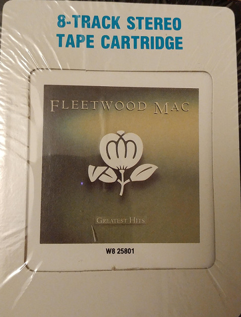
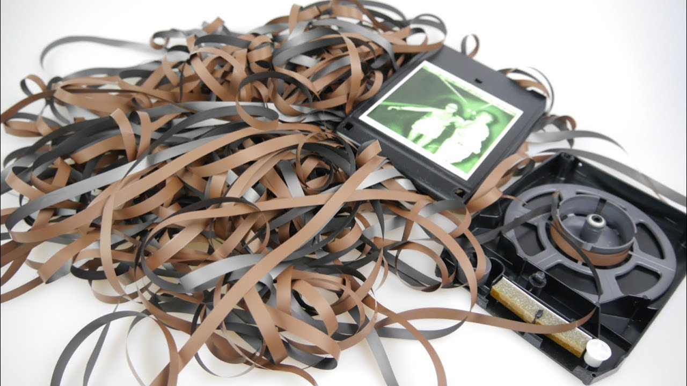
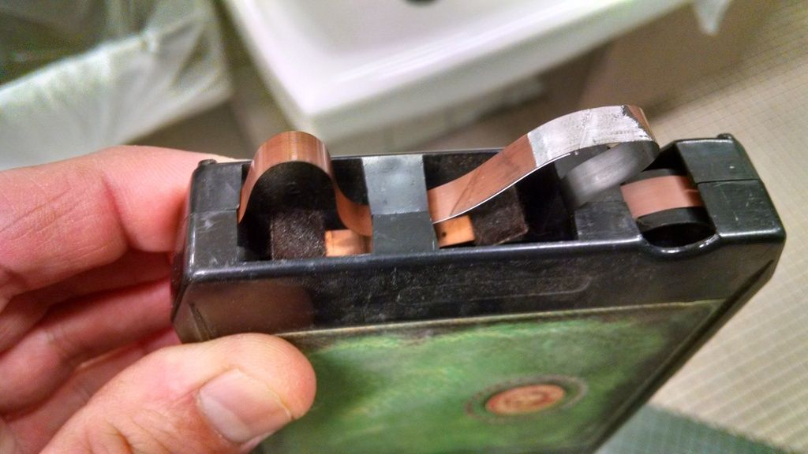
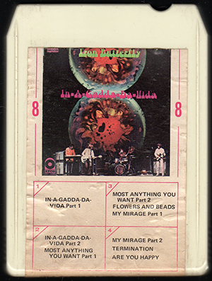
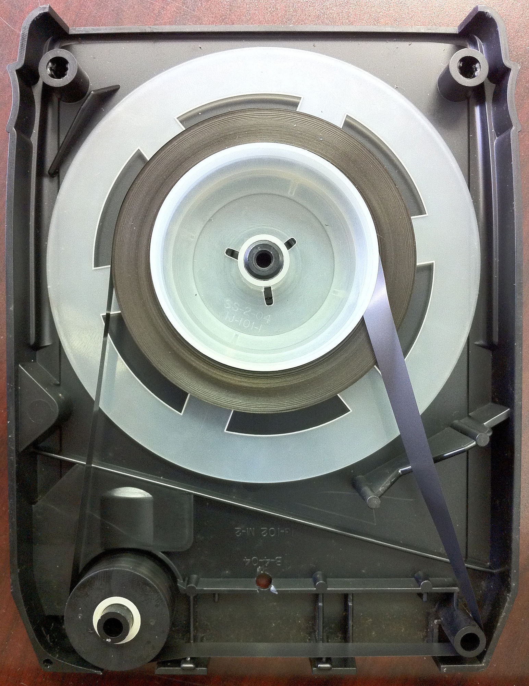
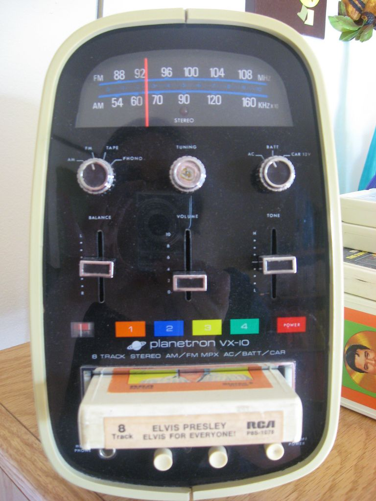

Issues, Problems and Decline
Decline
8-Track tapes began to lose popularity for a variety of reasons, by the late 1970s, to the more portable and reliable compact cassette, see below, which was originally released in 1962. By the end of 1982, 8-track tapes were phased out of US retail stores. They were available through Columbia House and RCA Record Club (BMG) until 1988. Blank tapes were manufactured until 1990 by Radio Shack's Realistic brand. The last major album available on 8-Track tape is believed to be Fleetwood Mac's Greatest Hits (1988), available through Columbia House.



Reasons for Decline - Issues and Problems
8-Track tapes were less reliable than other formats (cassettes, LP, CD)
- Rewinding was technically impossible due to 8-track's design, and fast forward was not available on most players, partially because it could run down the motor and the tapes.
- The conductive metal foil, that is at the start/end of the 8-track tape, often comes unbound from the tape, due to its age, which causes the tape's splice point to be become undone, causing the tape to disappear inside the cartridge, or feed into the player.
- 8-track tapes would get eaten, most often in car stereos. This could be caused by the tape getting caught on the tape head or the capstan
- On some players, the tape could get flipped upside-down by the head when the head moves for the program change, especially when it moves from the lowest position (program 4) to the top (program 1).
- If the graphite backing of the tape, which allows it to move smoothly, strips off, the tape will tighten up and become unplayable.
Inferior Sound Quality
- If the tape head is not correctly aligned to the tape's tracks, it can result in cross-talk, which is when sound from other programs in audible, most notably when there is no music on the current program but there is some on another.
- The foam tape pressure pads corrode over the years, causing poorer play-back quality, such as low audio levels, wow and flutter. Some cartridges have metal-felt pads which are more durable.
- Over the years, the compact cassette introduced better metals formulations, including chrome (type II) and metal (type IV). They offered better dynamic range, which could be nearly CD quality. 8-Track's never used better tape formulations, still using a basic ferric coating. This prevented 8-track from achieving a higher sound quality.
Album Translations
- Unlike the compact cassette, the 8-Track tape had 4 programs as opposed to 2, like the cassette or LP record. This made it more difficult to translate albums on to the format. It often required modifying the original compilation to fit the format. Methods of this included:
- Long blank areas which were sometimes at the end or start of programs to make it fit.
- Splitting songs in half over two programs, so it could fit. For example, the "Beginning" or "Part 1" of a song would be at the end of program 1 and the "Conclusion" or "Part 2" would be at the start of the next program, so in this case program 2.
- Reordering songs, from their original odder, so they would fix better.
- In a few cases extra musical content was added to fill the extra/blank space. One example, was a guitar solo in Pink Floyd's Animals.
On rare occasions, an album would perfectly translate onto 8-track, without any of the methods above.
Aesthetic and Style
- The cartridge itself as well as the labels didn't look aesthetically pleasing, compared to cassette or record.
- A lot of tacky, cheesy albums were released on 8-track.



Legacy
Now, nearly 50 years, after 8-Track's hay-day, the format is nearly forgotten by people outside and even inside, the United States of America. Even so, some collectors still enjoy the forgotten, notoriously unreliable format. Recently some indie artists have released albums on 8-track, either just for fun or for the nostalgia.
Looking back, 8-track boasted a continuous tape, which by modern standards seems so simple and is something we take for granted. 8-track indirectly influenced CDs, which can continuously loop or cassette compact's later feature of automatic tape flipping, also allowing continuous play, without having to manually flip it over yourself.
Somethings it is good to step back a moment and realize what we have today, and take for granted, is thanks to the technologies of the past, and that without them, we would not be where we are today!